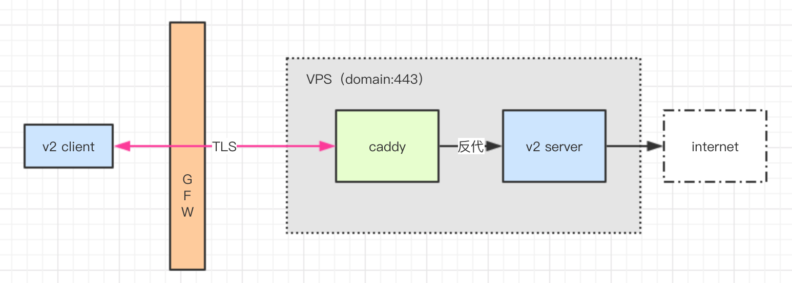

这是一篇纯粹的技术文章，不讨论任何技术之外的问题。所有的讨论都是技术中立的。
背景
如今，在数量上最为普遍的一类梯子，主要是基于shadowsocks搭建的，以下简称ss。我没有数据上的支撑，但主观的感受是如此。
那么对于ss来说，是用对称加密的方式加密你的网络流量，把网络流量封装成没有任何特征的TCP包，包括访问的网站、流量的内容，都是没法解密，或者说很难解密的。我们可以认为，AES算法本身是绝对安全的，那么潜在的隐患可能是出在ss软件本身，比如是否存在编码上的漏洞，导致特征暴露。从ss过去的changelog来看，确实修复过一些可能暴露的特征，但目前的版本看起来还是比较稳定的，没有明显的遗留问题。
当然大家也都知道，ss梯子的稳定性是很不可靠的，梯子被封是家常便饭。具体来说，一种轻度的被封是TCP端口被封，那么这时候你把ss服务端的端口更换一个即可；还有一种力度更大的封，是把整个IP封掉，那就是包括全端口乃至ping包都发不过去了。
至于ss为什么被封，说实话我也从来没听到过一种令人信服的说法。一直有传言说，ss协议已经被破解了云云，但我个人是不太相信的。如果说ss协议真的从原理层面就已经能被识别到，那梯子被封的程度就不会是今天的这种力度了。就好比说，如果股市上有一种指标能赚钱，那股市就会在很短的时间内，将这个指标的作用体现在股价上，这个反馈机制应该是很有效的，梯子技术和GFW的对抗也是如此。当然，可能对抗双方都掌握有小范围的秘密信息，但是这些因素也反映不到公开的信息渠道上，比如github。一旦反馈出来了，那就不是小范围的秘密信息了，博弈会迅速达成新的平衡。
但是我们都能承认的是，这种对梯子的封禁现象，在一定程度上的确代表了GFW对梯子的某种识别能力。那么为什么会这样呢？以下是我的猜测。
首先，梯子的主要供应者，也就是距离我国较近的主要廉价VPS供应商，一共也就那么几家，那么这些供应商的IP段相对来说也是固定的，那么这些IP段应当会受到重点的关注。
第二，被ss加密后的流量，从GFW的角度来看就是”未知TCP流量”。那么虽然我不知道流量的内容是什么，但是我可以分析流量的特征。比如我观察到海外有一台VPS，尤其是一台我重点关注的厂商的VPS，比如搬瓦工。这台VPS上有一个端口，国内有多个IP以稳定的周期特征(比如，白天流量大晚上没流量)，和这个端口产生了大量的”未知TCP流量”，那我就会认为这很可能是一个梯子。
虽然这样判定的话，一定会误伤一些东西，准确率未必好，但是召回率应该还是挺不错的，尤其是对裸ss，毕竟没做过什么特意处理的ss梯子，很难逃出我上面描述的这种模式，也就是左手边有多个IP，右手边就是一个热门VPS厂商的IP上的一个端口，流量的样式是”未知TCP流量”。
所以，我认为这就有可能是一种GFW对抗梯子技术的手段，从月初的反馈来看，效果非常显著。显然，这是梯子技术的需求方，面临的一个切实挑战。
一种基于v2ray+websocket+tls的梯子方案
v2ray+websocket+tls，可以说是当下较为流行和先进的一套梯子技术。
v2ray以下我简称v2。v2是近来比较流行的一种梯子工具，能完美替代ss，而且提供了多得多的功能。当然，流行也是相对的，我觉得就光是搞config文件，就能劝退99%的非技术人员。
v2的加密性能在我看来和ss区别不大，或者至少我还没用出来有什么区别，但是v2支持一些额外的，可能对梯子更有用的功能，比如多跳、负载均衡，还有就是今天我们要看到的，对websocket+tls的支持。
这种方案的优势，一言以蔽之，就是能将加密网络流量转化为真正的TLS流量，也就是SSL流量，或者也可以说，HTTPS流量。而且这不是一种”伪装”，而是真正的TLS流量。那么，我们可以设想，对于GFW来说，这是一个不好处理的局面。
首先，TLS流量是一种非常普遍的加密流量，那么对于GFW来说，它需要在占压倒性多数的正常TLS流量中，区分出哪些是梯子产生的TLS流量。虽然我相信，梯子产生的TLS流量，和我们平时访问网站时产生的TLS流量，从模式上来看肯定还是有区别的，但是这种区别有多显著，我想会是个问题。这听起来像是个分类问题，是不是能上机器学习呢？哈。
我们可以有限地认为，TLS技术本身是绝对安全的。
其次，这种技术门槛较高，用的人还很少，对于GFW的目标来说，显然有优先级更高的事情可以去做，短时间内这种梯子技术我认为是稳定的。
那么我们可以猜测，GFW有什么办法应对这种局面？除了刚才提到的直接识别TLS流量的方式，我还能想到两个思路。
一是不关心流量，直接对海外的VPS，比如热门廉价VPS供应商的IP段做扫描，看看能否扫描出梯子软件的开放端口。不过这一点应该很难，首先，ss端口能不能被识别，我个人是持强烈怀疑的态度，其次，v2+websocket+tls的方案，可以让v2不直接暴露任何端口，v2前面会放置一个web反代，通过websocket协议来访问443端口，并且具体的path参数是被TLS加密的。如果直接用HTTPS请求443端口，只能拿到一个普通页面而已。所以可以说，v2+wss(注：wss = websocket+tls)的方案，扫描方案不可行。
那么第二种方法可能比较遥远，但我觉得会是一种未来的方向，就是结合QoS的白名单机制。比如，对于GFW来说，它相信访问https://google.com的流量是正常TLS流量，但是对于一个访问量很小的https站点，比如说国内只有个位数的IP和这个https站点产生TLS流量，那对这种流量进行限速，乃至重点关注，我想是一种思路。在极致追求封梯子召回率的时候，这种梯子可能首当其冲。那么对于梯子的需求方，思路也很明确，就是将自己所使用的流量，尽可能和GFW认为的”良好”流量混淆在一起。比如我看最近有一种在梯子节点前面，放置一层CloudFlare服务的方案，应该就是这种思路的提现。
具体架构

架构很简单，就是图里这样，当然比裸奔的ss还是复杂一些。在这个图例，忽略了docker因素。
caddy是关键的组成部分，caddy和nginx一样，能够提供web容器和反代的功能，但是caddy有两个优点，一是caddy能全自动配置HTTPS证书，不需要手动进行任何配置，非常方便。否则的话至少你也得通过acme.sh等工具，从letsencrypt手动申请https证书。二是caddy的配置文件非常、非常精简，配置反代就是一行的事，我给大家展示一下：
|
|
是的，就是如此简单。从配置文件可以看出，我配置了两个反代，如果直接访问/，会被反代到google。那么只有v2的客户端，开启了tls选项并设置了名为/path的路径时，v2的流量才能被正确反代给本地的10000，也就是v2ray。这样一来，v2根本就不需要暴露任何端口，完全可以运行在127.0.0.1上，这也就是为什么说这种方案对抗扫描的效果会很好。
那么对于加密流量是怎么一个解包的过程，其实我也有点不太明确，我试着分析一下。首先，本地的v2客户端，将原始流量首先打包成websocket协议，然后再打包成TLS。随后，v2以https客户端的身份和caddy沟通，那么因为caddy上是有合法证书的，那么最外层的TLS加密就解开了。再然后，caddy分析websocket协议，会根据path参数，将流量反代给v2服务端程序。那么，因为我在配置v2服务端程序时，就指定了以websocket协议沟通，所以服务端可以正确识别客户端产生的websocket包。那么服务端再解开websocket包，还原出原始网络包，发送给目标网站。
哦对，因为这个架构是基于TLS的，也就是说必须得有一个域名才能搭建这个架构。域名的话，有免费的也有付费的，免费域名我看主要是以.tk .cf等顶级域名为主，但是我没申请成功，就在国外一家比较大的域名供应商买了一个com域名(不是godaddy，不推荐)，并A解析到我的VPS上。域名是70元左右一年，VPS每月5$，所以成本还是非常合理的。
如果要说性能的话，说实话比我之前用的裸ss要慢一些。但是我不能确认是v2+wss的原因，还是vps本身的网速原因，后续我计划在同一个vps上搭裸ss，测试一下v2+wss的方案是否会明显拖慢网速。
总结
基本就是这样，以上是我对梯子技术的一些思考，并分享了一种基于v2ray+websocket+tls的梯子方案，这种方案在当下可能具有较为不错的抗干扰性和隐蔽性。